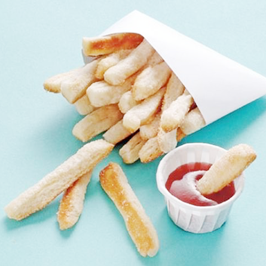

Les ingrédients
- Pâte feuilletée
- Sucre en poudre
- Confiture de fruits rouges
La recette
- Etale la pâte feuilletée.
- Coupe la pâte feuilletée en lamelles.
- Place les lamelles sur une feuille de papier cuisson, saupoudre de sucre et enfourne dans le four pour 15 minutes.
- Pour le ketchup, utilise de la confiture de fruits rouges que tu dois mélanger avec ta fourchette pour lui donner un aspect plus liquide !
- C’est prêt ! Tu n’as plus qu’à manger tes frites au ketchup pour ton goûter.